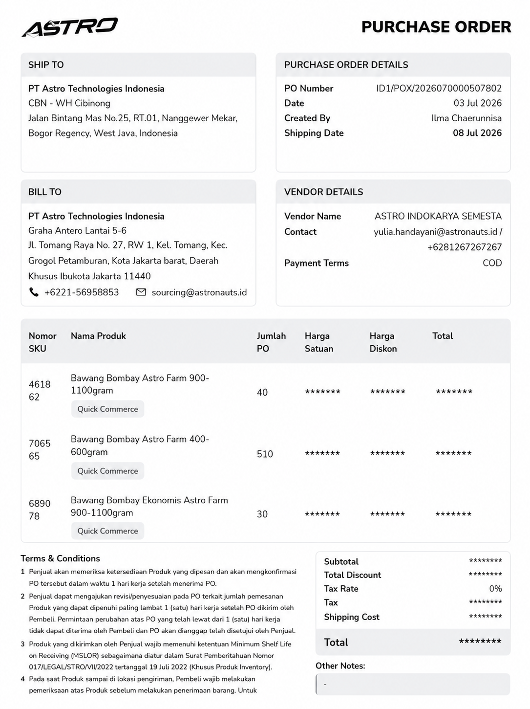
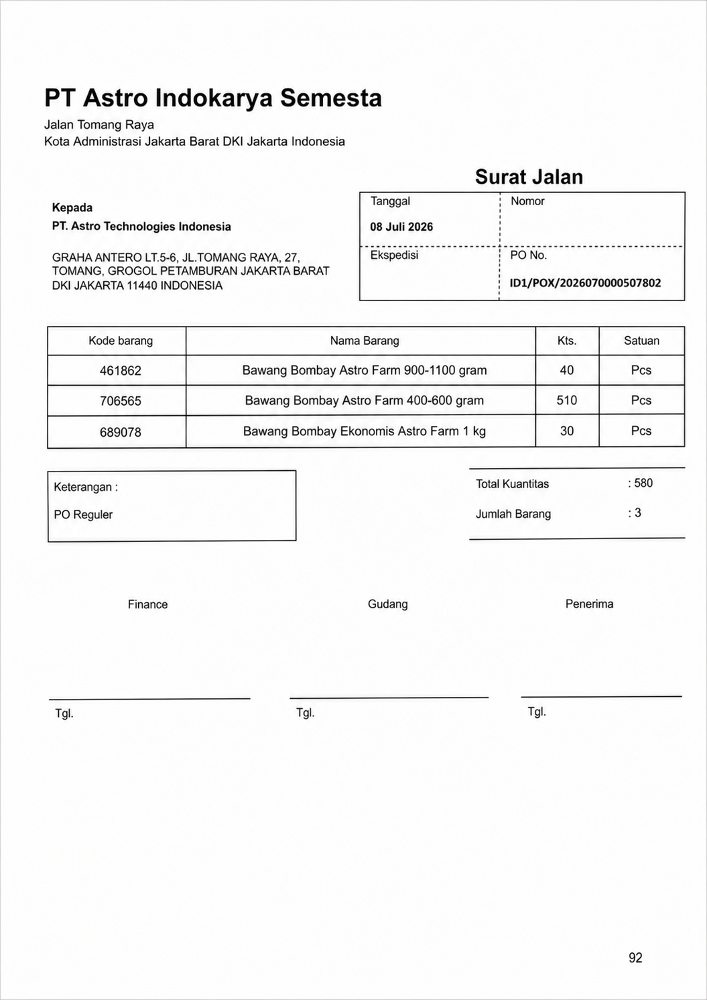
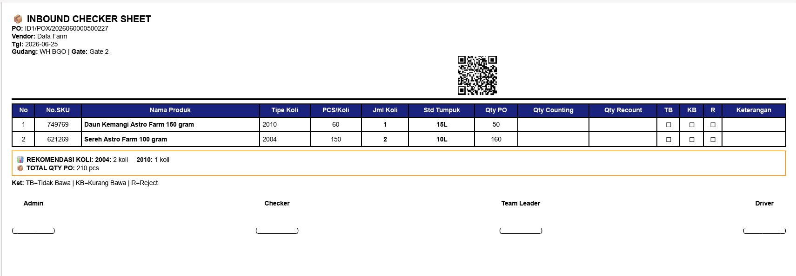

Aturan Singkat di Lapangan
Ikuti urutan proses
Mulai dari dokumen, pengecekan fisik, pencatatan, lalu input sistem.
Catat hasil aktual
Jumlah barang, kondisi barang, dan selisih harus ditulis sesuai temuan.
Laporkan kendala
Jika ada dokumen tidak lengkap, QR tidak terbaca, atau barang rusak, segera eskalasi ke PIC.
Panduan Umum
Selamat datang di Portal Panduan Kerja Mitra Warehouse Fresh. Halaman ini dirancang sebagai acuan cepat dan praktis bagi seluruh mitra di lapangan untuk memahami setiap tahapan kerja secara terstruktur, mulai dari proses penerimaan barang (inbound), pengelolaan stok (inventory), hingga persiapan pengiriman (outbound). Silakan gunakan menu navigasi di samping kiri untuk mencari modul spesifik sesuai dengan peran Anda, serta pastikan untuk selalu mengikuti urutan instruksi dan standar kualitas yang berlaku demi menjaga kelancaran operasional gudang kita.
Inbound Admin
Fokus pada penerimaan dokumen, pengecekan kualitas barang, pencatatan hasil aktual, serta input data ke sistem WMS.
Tugas Admin Inbound secara umum
Secara umum, Admin Inbound bertanggung jawab memastikan seluruh proses penerimaan barang terdokumentasi dengan benar, akurat, dan sesuai SOP.
Vendor melakukan registrasi
Vendor melakukan registrasi ketika tiba di warehouse, kemudian dari tim LP/security merubah status PO dari "On Delivery" menjadi "Arrived".
(Klik untuk lihat contoh gambar)

Pengecekan kelengkapan dokumen dan mempersiapkan lembar kerja HO untuk checker
Pastikan No.PO dengan surat jalan sesuai, kemudian gabungkan dengan lembar kerja HO menjadi satu bagian dan diberikan kepada checker.
(Klik untuk lihat contoh gambar)



Proses pengesahan dokumen penerimaan (GRN) (Klik untuk lihat contoh gambar)
Pastikan jumlah penerimaan pada sistem sesuai dengan penerimaan aktual. Berikut ini langkah proses GRN (Good Receipt Notes) pada sistem WMS oleh Admin Inbound.


Inbound Checker
Melakukan perhitungan fisik aktual dan pencatatan pada sistem.
Persiapan Aset
Menyiapkan aset yang digunakan seperti keranjang, pallet, seuic, partisi untuk melapisi keranjang
Proses penerimaan
• Sebelum dilakukan proses penerimaan oleh Checker Inbound, dilakukan pengecekan suhu mobil dan produk oleh tim QA Inbound
• Setelah QA Inbound mengecek produk secara sampling, Checker inbound melakukan pengecekan kualitas secara visual dan menghitung jumlah produk yang akan ditermia sesuai dokumen PO (Purchase Order)
• Saat proses penerimaan Checker Inbound juga melakukan pemisahan keranjang terhadap produk kategori bad
• Produk yang diterima hanya yang memiliki kriteria sesuai standar, untuk produk kategori bad akan ditolak
(Klik untuk lihat contoh gambar)


Inbound Labeling
Proses Labelling
Penempelan label barcode / Package ID sesuai instruksi sistem pada keranjang fresh product.
Inventory Fresh
Putaway dan stokFokus pada putaway, penjagaan stok, pengecekan lokasi, dan penanganan barang tidak layak.
Putaway barang
Pindahkan barang ke lokasi sesuai instruksi WMS dan aturan penyimpanan fresh.
Cek kesesuaian lokasi
Melakukan stock opname berkala dan pembersihan rak penyimpanan dingin.
Outbound Fresh
Proses Outbound
Persiapan pengiriman barang keluar dari gudang menuju ke hub/tujuan berikutnya.